Nursing home in Egilsstaðir2012–2016 · 1st prize
Health care
Nursing home in Egilsstaðir2012–2016 · 1st prize
Health care
Architecture, urban and regional planning and creative landscaping.
22 projects
Nursing home in Egilsstaðir2012–2016 · 1st prize
Health care
 Student housing2012–2013
Housing
Student housing2012–2013
Housing
 Skuggahverfi apartments2016
Housing
Skuggahverfi apartments2016
Housing
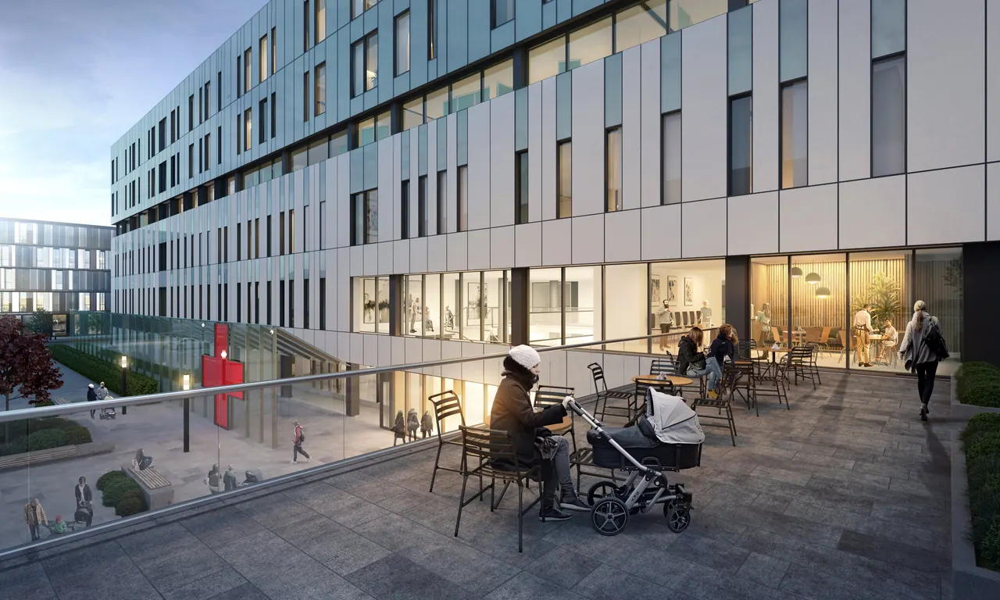
Treatment centre Reykjavík2015– Health care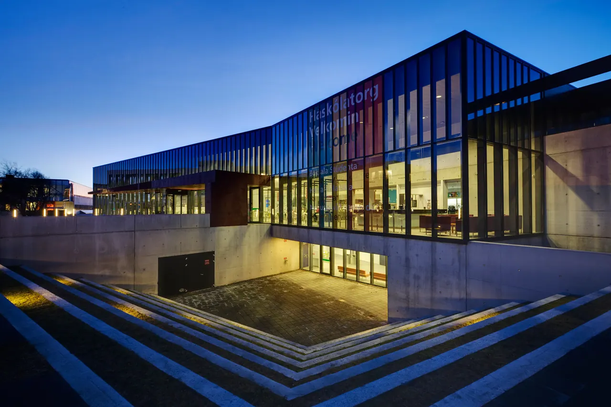
University Centre2005–2008 Cultural and civicEducation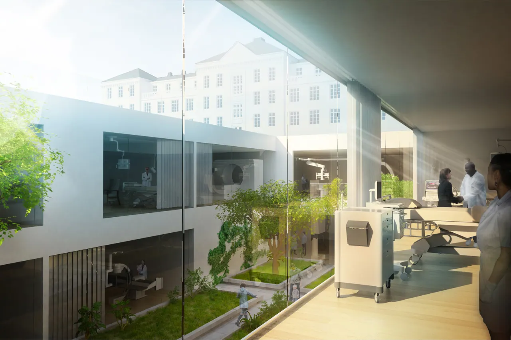
New university hospital2010 · 2nd place Health care New ferry terminal and shelter2014– · 1st prize
Energy, infrastructure and mobility
New ferry terminal and shelter2014– · 1st prize
Energy, infrastructure and mobility
 Herjólfsgata apartments2016
Housing
Herjólfsgata apartments2016
Housing
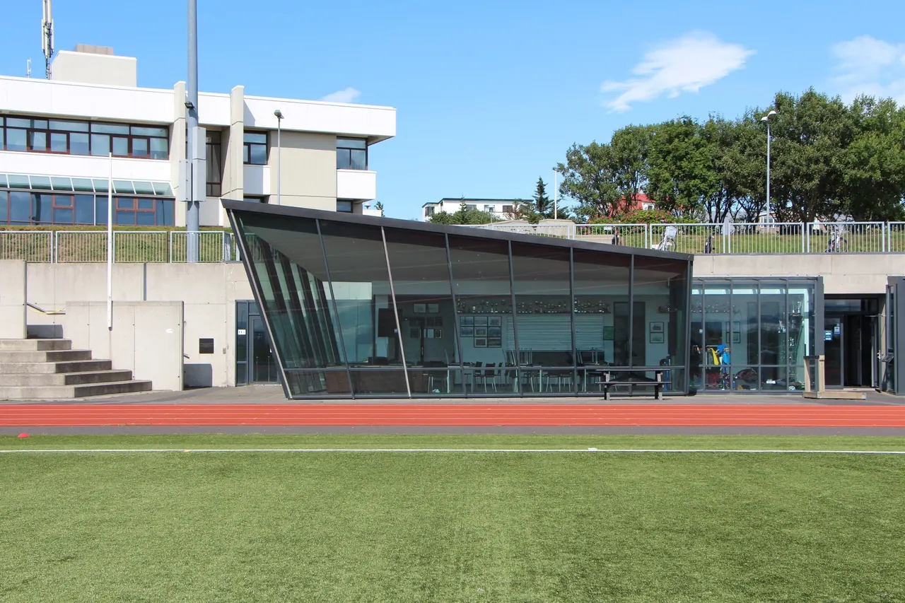
Sport facility centre in Seltjarnarnes2007 Sport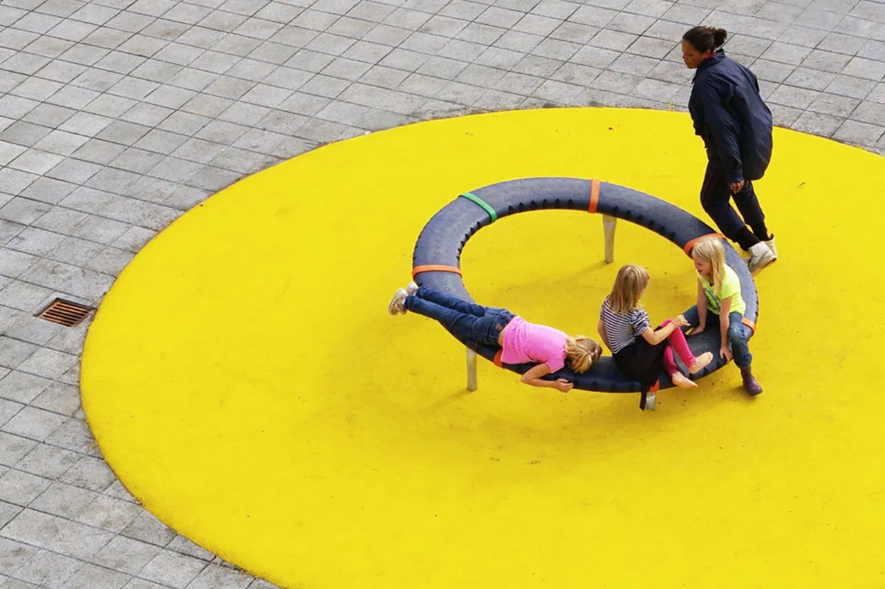
Norðlinga Elementary School1997– Education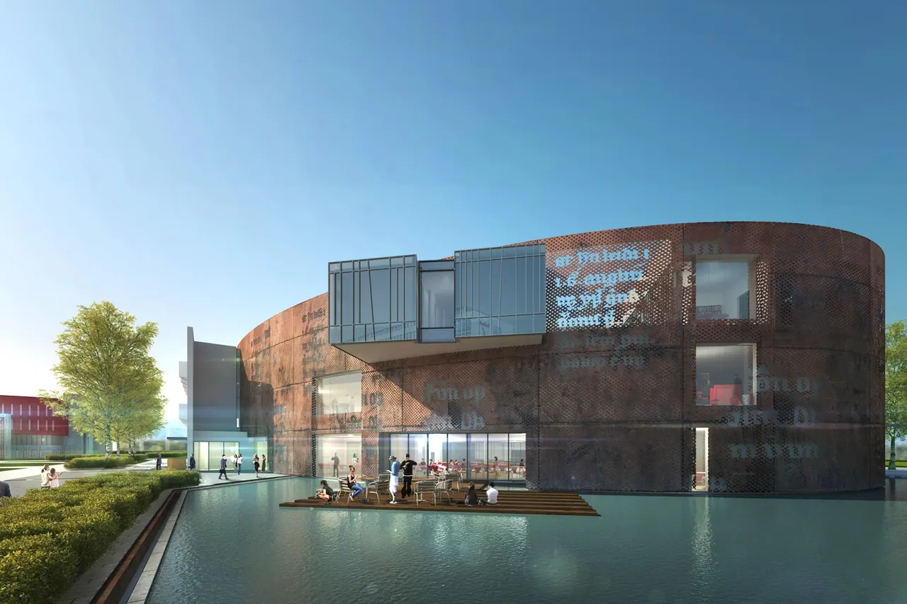
Centre for Icelandic studies2008– Cultural and civic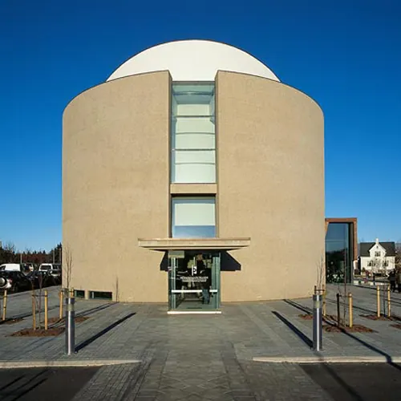
National Museum of Iceland1997–2004 Cultural and civic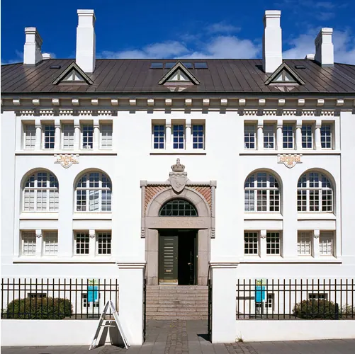
House of Culture1997–2000 Cultural and civic Reykjavík Energy2000–2003
Energy, infrastructure and mobility
Reykjavík Energy2000–2003
Energy, infrastructure and mobility
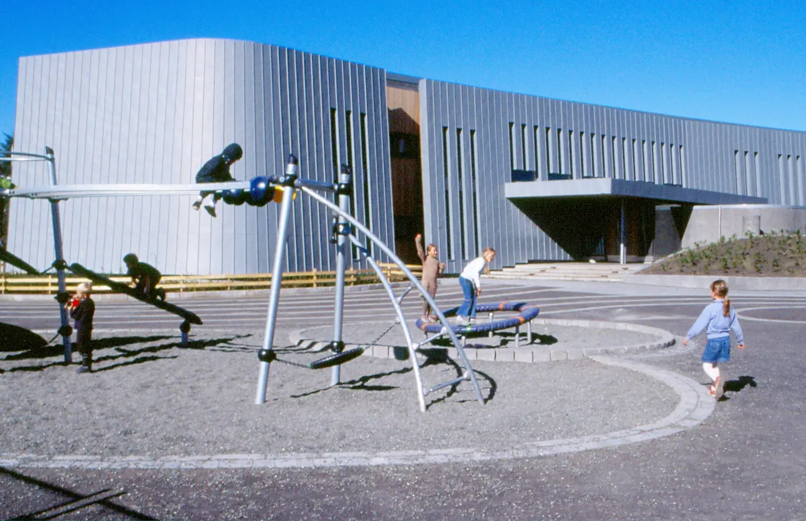
Melaskóli2001 Education Cycling and pedestrian bridges2012 · Special mention
Energy, infrastructure and mobilityUrban planning and landscape
Cycling and pedestrian bridges2012 · Special mention
Energy, infrastructure and mobilityUrban planning and landscape
 Hrólfsskálamelur apartments2008
Housing
Hrólfsskálamelur apartments2008
Housing
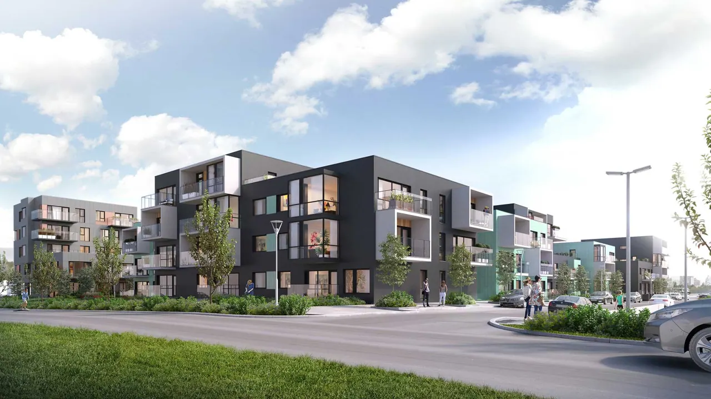
RÚV apartments2019 Housing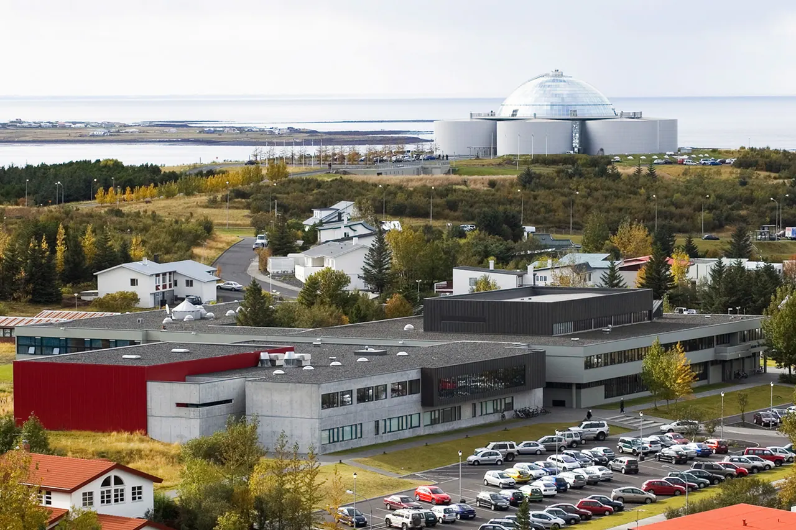
Hamrahlíð Grammar School2005– Education Power Plant In Straumsvík2001
Energy, infrastructure and mobility
Power Plant In Straumsvík2001
Energy, infrastructure and mobility
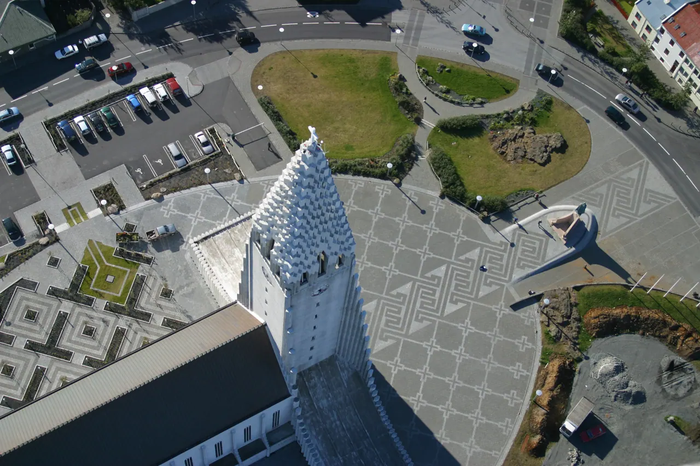
Skólavörðuholt1992–2003 Urban planning and landscape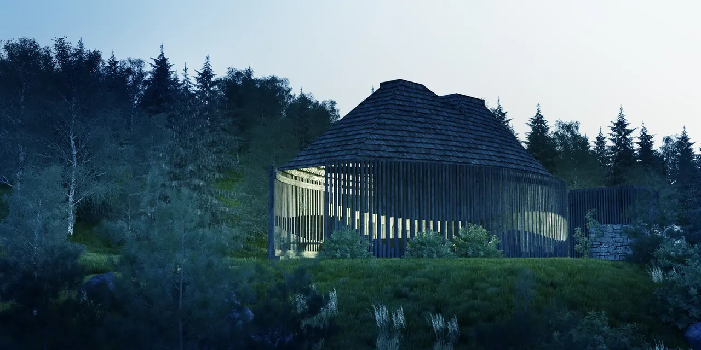
Áningarstaður í þjóðskógum2013 Urban planning and landscape- Nursing home in EgilsstaðirHealth care
- Student housingHousing
- Skuggahverfi apartmentsHousing
- Treatment centre ReykjavíkHealth care
- University CentreCultural and civic
- New university hospitalHealth care
- New ferry terminal and shelterEnergy, infrastructure and mobility
- Herjólfsgata apartmentsHousing
- Sport facility centre in SeltjarnarnesSport
- Norðlinga Elementary SchoolEducation
- Centre for Icelandic studiesCultural and civic
- National Museum of IcelandCultural and civic
- House of CultureCultural and civic
- Reykjavík EnergyEnergy, infrastructure and mobility
- MelaskóliEducation
- Cycling and pedestrian bridgesEnergy, infrastructure and mobility
- Hrólfsskálamelur apartmentsHousing
- RÚV apartmentsHousing
- Hamrahlíð Grammar SchoolEducation
- Power Plant In StraumsvíkEnergy, infrastructure and mobility
- SkólavörðuholtUrban planning and landscape
- Áningarstaður í þjóðskógumUrban planning and landscape


No project matches this filter.
Sector (proposed)
Competition
The studio publishes no grouping. These are a proposal for this preview.